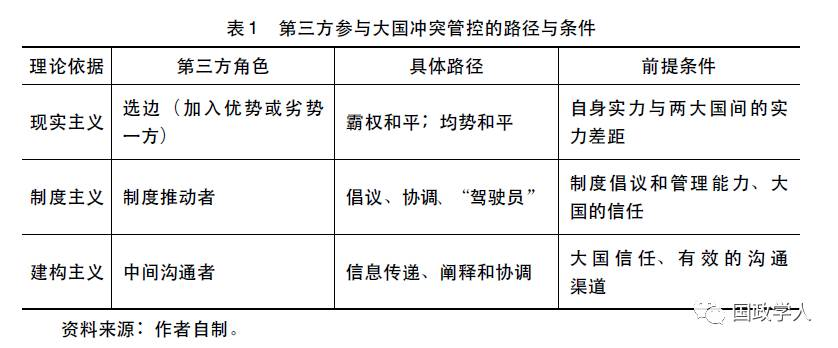

收录于合集

简
李开盛
上海社会科学院国际问题研究所研究员
中美实现和平共处的路径选择
中美两国是一种典型的权力竞争关系。尽管在贸易、货币、人权等种种议题方面存在利益冲突，但两国间长期存在的根本矛盾仍然是分别作为守成大国与新兴大国间的权力消长关系。这种权力竞争是历史上大国权力交替最终陷入战争状态的根本动因，也是当前中美特别强调要避免 “ 修昔底德陷阱” 的重要背景。中美能否有效地管控冲突，最终前所未有地实现和平共处，成为当代国际政治研究与实践中的最大挑战。从理论上看，两个具有权力竞争关系的大国要实现和平共处，在不同的视角下有不同的路径:
第一，权力现实主义。 权力现实主义包括两个分支: 一是 “ 权力均衡论”， 即双方较稳定地保持大致同等的权力，所以谁也无法向另一方发起挑战，因而实现和平。汉斯· 摩根索 (Hans Morgenthau) 强调: 权力均衡和旨在维护权力均衡的政策，是主权国家构成的社会得以稳定的基本因素。当然，权力均衡并非意味着相关因素数量 (如国内生产总值、军队、导弹等) 的完全对等，而是只要一方的实力优势不足以促使其有信心发动对另一国的战争即可。另外，之所以强调“ 较稳定”的均衡，是因为战争与和平这样的重大问题往往基于对一定时期内敌我国力的估量，如果这种均势只是短时的，那么并不会成为影响一个国家决策的重要因素。 二是 “ 霸权稳定论”，即一方拥有稳定性的足够权力优势，使得另一方无法或不愿挑战而实现和平。当然，很难对 “ 足够” 设定一个量化标准。它可能意味着一国的权力 (特别是军事权力) 至少是另一国的两倍，使另一国无法确信自己能在一场挑战中获胜。而 “ 稳定” 则意味着在可预期的时间里，另一国无法跨过这一权力差距，因此也失去挑战其地位的信心与动机。值得注意的是，与 “ 权力均衡论” 相比，“ 霸权稳定论” 是以霸权良性为前提假定的，即享有重大实力 优势的霸权国不会对挑战国发动先发制人的打击。但没有理论上的推演与足够的历史证据支持这一假定。因此，“ 霸权稳定论” 只适应于管控新兴大国对于守成大国的战争动机，而无法阻止拥有更多权力的守成大国对于新兴大国的战争欲望。
第二，新现实主义， 其典型代表是 肯尼思· 华尔兹 (Kenneth N．Waltz) 的 “ 核武器稳定论” 。他主张，核武器是 “ 巨大的和平力量”，极大地减少了核拥有 国之间的战争可能性。 这是一种当代技术条件下的相互确保摧毁战略，使得谁也不敢首先发动战争，从而保持有核国家的实力平衡。 **实现这一状态取决于两 个因素: 一是相关国家是否拥有第二次核打击能力，即在遭受对方先行核打击之后是否还有核还击的能力。**所以，“ 有效威慑需要不断进行高投入的技术革新 (现代化)，通过有计划地提高安全可靠的第二次打击能力，来维持国际战略的稳定。” 在达到这一标准后，双方间的核弹头数量多少并无意义。 **二是相关国家是否仅 部署有限的导弹防御系统。**如果一国建立了完备的导弹防御系统，也就意味着这个国家取得了可以核打击别国但免受别国核报复的能力，这就破坏了相互确保摧毁 战略，鼓励拥有足够导弹防御能力的国家发动战争，因此不利于和平。
第三，新自由制度主义。 新自由制度主义认为，国际制度所具有的权威性、制约性和关联性，使得其成为国际合作的有效保障。具体而言，制度要在国家间起到保障和平的作用， **主要是通过以下 路径: 其一，**通过制度化的裁决或是协商，就冲突的利益达成妥协。一般来说，越是不重要的利益就越容易通过制度的方式达成妥协，那些被认为是核心的利益很少能够通过制度进行协调，甚至制度 的成员国会预先将核心利益排除在制度协调的范围之外。 **其 二，**通过制度化的各层级交往 (如外交磋商、战略对话、定期峰会等) 减少误解与误判，避免不必要冲突的发生。 其三， 通过制度安排 (如世界贸易组织、双边贸易协定等) 生成共同利益或机会成本，从而使各方不愿意或不能够发动战争。 **其 四，**在冲突发生之 前，发展出某种制度框架或是在既有制度框架之下，通过信任建立措施和预防性外交，减少冲突的出现频率。 **其 五，**或许更为基础和重要的是，像地区性组织这样的制度有利于培养地区的集体身份与认同感，减少成员之间的不信任与疏离感， 以便从根本上避免冲突的发生。影响制度管控争端能力的一个重要因素是制度的强度，如那种采取了多数表决的制度往往较协商一致决策方式的制度更加有效，因此联合国安理会体现出了较国际联盟理事会更有效的一面。另外要注意到的一点是: 权力不同、性质不同的国家，可能受制度的影响不一样。理想地看，无论大小国均应受制度的同等约束; 但事实上，权力较大的国家或是对制度认同感差 的国家，即使已经加入制度之中，制度对其的约束力可能相对较小。
第四，“ 相互依存论”， 即两国经济达到一荣俱荣、一损俱损的地步，即使它们之间也存在权力竞争，但也不敢随意发动战争。这一约束带来的结果很可能是不平衡的。因为经济相互依赖的程度常常不同，依赖程度小的一方更有可能受到较小管控，相对来说更有欲望和能力主动对另一方发动战争。对此， “ 相互依存论” 提出 “ 敏感性” 与 “ 脆弱性” 的概念。在不对称相互依赖的情况下，敏感性和脆弱性均较大的一方更容易受到约束，而另一方受到的约束则较小。另外需要 注意的是，经济上的依赖也难以完全压倒军事上的考量。即使一个国家在非对称相互依赖中处于优势，也可能遭受军事上的反击。1941 年日本对珍珠港和对美国控制下的菲律宾发动进攻就是一例。
第五，建构主义。 建构主义相信，无政府体系至少有三种文化，即强调敌人角色的霍布斯文化、强调竞争对手角色的洛克文化和强调朋友角色的康德文化， 而且暗示三种文化之间存在一种发展性进化关系。根据这种逻辑，如果国家间改变对方为对手和敌人的观念，彼此建构出伙伴或朋友的身份，也就意味着相信对方不会为权力而发动战争，或是建构一种愿意和平竞争的关系。相对于权力与 安全均衡来说，观念建构往往是一个较长的过程，但常常是双方发展关系的重要预防性手段。双方间观念的建构，至少要较国际体系文化的改变更为容易。事实上，很多国家都注重推动与其他国家间的人文交流，其一个重要目的就是改变彼 此社会、人民间的看法，从而避免未来的冲突。第三方要在管控大国争端中发挥作用，也离不开上述路径。关键是要弄明白， 在不同的路径下，第三方可以发挥什么样的作用。
第三方在管控大国争端中的作用
第一，权力现实主义。 面对权力竞争中的两个大国，是否与其中 一国结盟或 以平衡者身份出现，是第三方常常不得不面对的选择，也是其作用于两大国竞争的最直接路径。昆西· 怀特 (Quincy White) 与肯尼思· 华尔兹将 “ 追随” 作为平衡的对立面，前者指的是加入更强大的联盟，平衡则意味着与处在弱势的一方结成联盟。 **从是否能 够管控大国竞争的角度看，第三方因此面临着两种完全不同的 “ 选边” : 一是加入其中一方，使该方达到 “ 拥有稳定性的足够权力优势” 的地步，使得另一方放弃挑战的希望，促成一种所谓的 “ 霸权和平” 。**对第三方来说，这意味着采取追随更强者的策略。其动机可能多种多样，有的可能出于对威 胁的评估 (例如冷战时期许多西欧小国选择加入美国领导的西方阵营而不是近在咫尺的苏联)，有的可能只是出于投机考虑。 **二是灵活地选边以实现均势和平，即 总是拉拢劣势一方对抗优势一方从而达到双方权力基本同等、任何一方都不可能向对方发起挑战的地步。**在这个过程中，第三方的安全也得以保证。近代英国就 一直在相当长的时期内，在欧陆大国间扮演均势平衡者的角色，随时准备加入弱势的一边。当然，第三方也可以选择任何时候都不选边站的局外中立角色，但这个时候它对于管控大国冲突没有直接作用，因此不是本文要分析的对象。
不管是致力于霸权和平还是均势和平，并不是每一个第三方在每一种情况下都可以对大国冲突管控发生直接作用。 一般来 说，第三方的选边要发挥作用也是有前提条件的: 第一，第三方自身相对于大国的实力体量。如果第三方的权力对 于两个大国的权力差距产生不了有意义的影响，那么它就没有办法在这方面影响到大国关系。 第二， 两大国之间的实力差距及其变化。如果差距小，第三方即使为小国，其实力加入某一国集团后也可能有实质性意义。如果在大国间实力差距大、第三方又是小国的情况下，第三方是否加入优势一方对后者来说并无意义， 如加入弱势一方也很难改变大国间的力量对比。在这种情况下，第三方的加入对 于管控大国冲突来说没有正面价值，甚至有消极意义，因为它的加入往往使得大国关系更加复杂化、更加难以管控。另外需要注意的是，第三方选择加入优势 一方的霸权和平仅仅有利于管控较弱一方大国的行为，而无法遏制霸权大国的行为，因此具有较大的缺陷。在某些情况下，第三方加入优势大国一方，甚至可能鼓励它主动向较弱势大国进行挑战。总体上看，由于国际社会仍处于无政府状态， 而且国家间实力消长总是处于不断变化之中，基于实力的国际政治斗争容易导致安全困境、新的矛盾甚至是 “ 擦枪走火” 等情况，而第三方的介入进一步加大了 摩擦甚至冲突的可能性，因而是不值得提倡的。
第二，新现实主义 (核武器平衡) 。当两个大国达成核摧毁的恐怖平衡时，第三方的加入或不加入均没有意义。
第三，制度主义。 这里面的关键问题是: 在两大国竞争时，第三方常常是小国，它们能够在两大国中间的制度构建和运行方面扮演积极角色吗? 笔者的答案是肯定的。事实上， **正是因 为两个竞争大国间的相互不信任，给了小国在制度创建与运作方面更多的空间，在某些情况下甚至是唯一的角色。**因为任何一个大国来牵头创建或主导某个制度，另一个大国都可能持怀疑与反对的态度，由第三方来牵头往往就是一个现实的折中选择。在有的情况下，甚至第三方能够主动介入大国之间，推动某些沟通机制的建立。例如，早在1989 年，马来西亚时任总理马哈蒂尔迫使美国与苏联两个超级大国采纳一整套有关信任度建设的方案，其中包括提前知会海军联合军事演习，共同采取行动以避免海、空难事故发生以及通 过交流信息增加透明度，等等。 **当前的一个 典型例子就是东盟在东亚地区合作中扮演的角色，**而欧盟的领导人也常常由小国来担任，其总部也设在比利时 (而 不是法国、德国) 的首都布鲁塞尔。由于中美、中日之间的不信任，很难想象其中任何一方来牵头搞地区合作，但东盟的出面解决了这个问题。从东盟最初与中日韩成立 “ 10 +3” 机制，后来发展成为包括更多大国在内的东盟峰会机制，东盟一直牢牢地坐在“ 驾驶员” 的位置上。这是因为，东盟国家意识到，如果大国都成为一个合作机制的成员，就能更好地与其打交道。当中日韩致力于发展东北 亚合作时，2011 年成立的三方合作秘书处也选择设在首尔而不是北京或东京。事实上，制度路径虽然仍面临种种限制，对第三方小国来说还是相对可行而且更加 值得提倡。“ 选边” 仍然是一种实力介入的方式，这一路径不但不是小国的强项(相对大国而言小国缺乏实力)，有其固有的缺陷 (如追随强势大国虽可抑制较弱大国，但可能鼓励强势大国的挑衅，更容易 “ 擦枪走火” 等)，而且往往需要复杂的平衡外交技巧。相对而言，制度提供了一种对各方更为公平、更有利于小国发挥作用的方式。 **从长远来看，国际冲突的管理最好还是通过机制化路径来进行 。当然，小国发挥制度推动者的作用也是有前提的，既要具备相应的制度倡议、管 理能力，还要受到两个大国的信任。另外，小国对于制度合作的方向性把握是很重要的。**例如，东盟在形成 “ 10 +3” 机制之后，无限制地把其他大国拉进来，反而削弱了原有机制的有效性与活力。相应地，这一机制在协调大国关系方面的作用反而降低了。
第四，相互依存论。 相互依存是一种双向的行为，如果经由第三方传导，就会减弱其敏感性与脆弱性。如A国的产品先出口到 B国加工后再出口到 C国，那么敏感性与脆弱性关系主要是在A国与B国或B国与C国之间、而不是 A国与 C 国之间产生。事实上，第三方直接介入两国间贸易时，还可能分散其相互依存程度，因此第三方在这方面起不到推动管控竞争的作用。
第五，建构主义。 建构观念是一个双向的、主体间的过程，因此关键还是在于两个国家自己。但是， **第 三方可能在观念建构过程中提供重要协助。**这是因为 “ 在公共冲突发生过程中，当双方在进行坦率的交流和沟通面临一定的障碍时，第三方干预有利于消除人为的分歧和想象的分歧，促进双方之间的有效沟通。” 具体来说， 第三方在促进沟通方面的作用体现在: 第一， 在两大国观念交流过程中，由于双方观念很可能是对立的、冲突的，这时第三方可以 扮演良性阐释者的角色 ， 即从积极、正面的角度对一方解释另一方的观念，以促进双方间理解而非产生误解。 第二， 在两大国已发生观念冲突时，第三方可以 提供 “ 第三种观念”，促进双方的交集和妥协。第三，当两大国不但发生观念冲突而且处于物理上的隔绝或敌对状态时，第三方可以扮演信息传递者的角色，避免因为缺乏沟通而导致更大的对抗，甚至促成双方的合作。巴基斯坦和罗马尼亚在秘密促成中美建交中的作用，就类似于此。当然， 要发挥上述作用，其前提也是第三方受到两大国的共同信任， 并且要有能够使双方同时沟通的管道。
总结起来，第三方要促进大国间的冲突管控，主要是通过固定或灵活地选边站、推动制度构建和协调、促进双方间良性认知方面而起作用。同时，这些作用的发挥也需要一定的条件 (参见表1)。

（注释：文章节选自《中美东亚冲突管控: 第三方的角色与选择》一文，有删节，全文及注释请见刊物文章。本文经国政学人公众号首发，转载请注明出处！）
文章来源：《 国际安全研究》2017年第4期
筛选： 红尘 编辑： 沉安
声 明
国政学人微信公众平台系非盈利学术平台。建立初衷是方便广大学人进行学术研究，促进学术的传播和交流，不做任何商业用途。如有任何权利问题，请直接与我们联系。